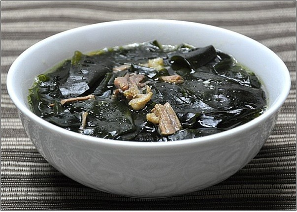
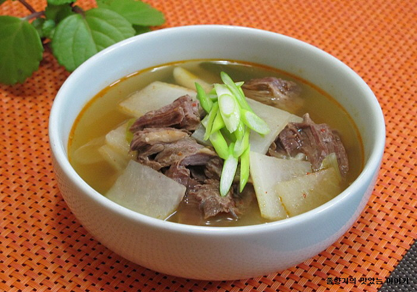
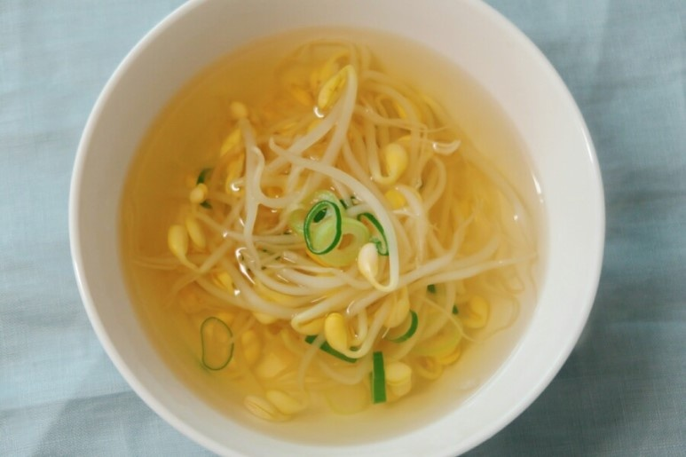
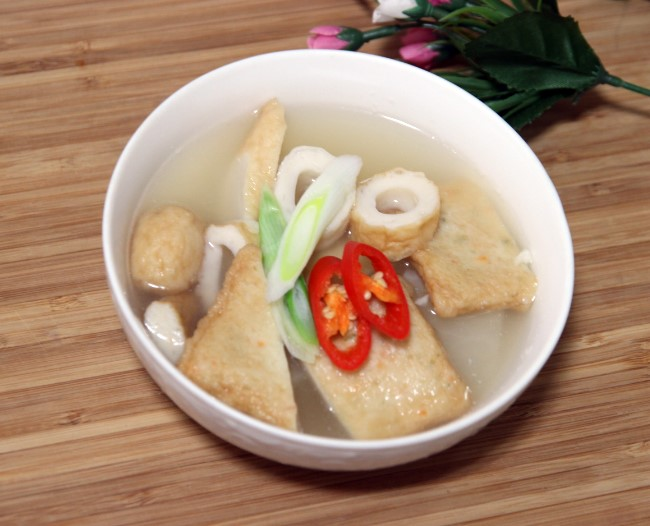

국
한국인에게 빠질 수 없는 식사거리

된장찌개
된장찌개는 된장을 풀어서 끓여 만든 찌개 종류로 채소와 두부, 고기를 넣어서 만드....

미역국
미역국은 미역을 넣고 끓이는 국이다. 한국에서는 아이를 낳은 산모가 쌀밥과 미역국을 먹는데, 미역에는 칼슘과 아이오딘이 많아 피를 맑게 하고 혈액순환을 촉진하는 등 어린이와...

소고기무국
시원한 맛이 좋은 소고기 무국은 간단하게 만들 수 있고 영양이 풍부해서 누구나 좋아하는 요리이다. 오래 끓일수록 깊은 맛이 나니 약불에 은근하게 끓여.....

콩나물국
주로 맑은 장국으로 만들지만 지방에 따라 각 가정의 취향에 따라 다양하게 만들어 먹는다. 만드는 법은 양념한 쇠고기를 넣은 장국이 끓을 때, 콩나물·파를 넣고 끓여서 소금으로 간을.....

어묵국
어묵과 무를 넣고 간장으로 간을 해서 끓이는 달큰한 맛이 매력적인 국이다. 전 국민이 좋아하는 매운 떡볶이와.....